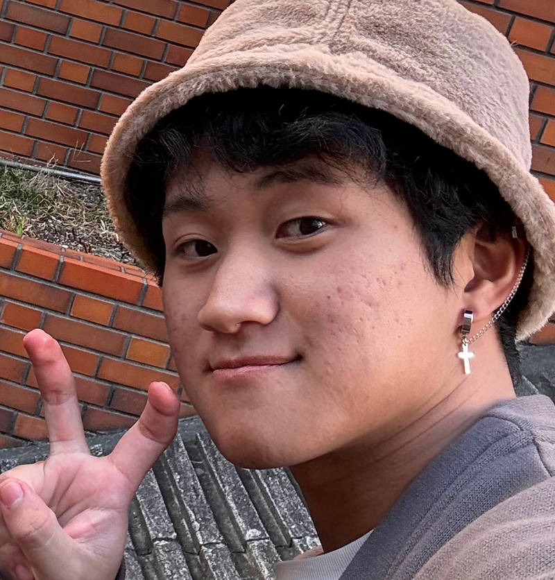
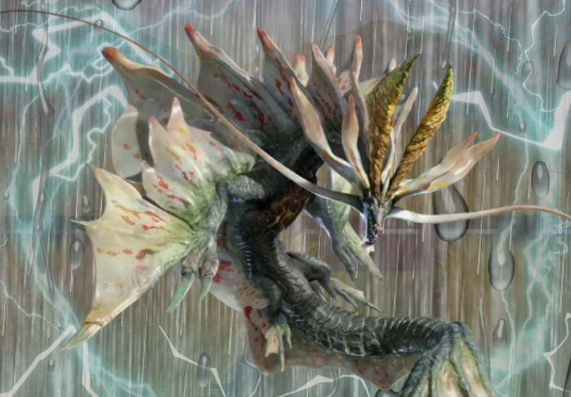

Ryuya Teramoto
寺本 龍弥
2005年生まれの牡牛座。兵庫県のたつの市出身です。高校時代に
モンスターハンターの登場モンスターの画像に背景や効果を加えて
カッコよく魅せることに夢中になり、それがきっかけで
グラフィックデザインについて興味を持ちました。
そして専門学校に入学しグラフィックやWeb、動画について勉強しているうちに
Webデザインに興味を持ちWebデザイン専攻で勉強を始めました。
アニメーションを使ったWeb制作に楽しみを覚え
自分で作るサイト内にアニメーションを埋め込む傾向が多くなりました。

↓高校時代に制作した編集画像↓
